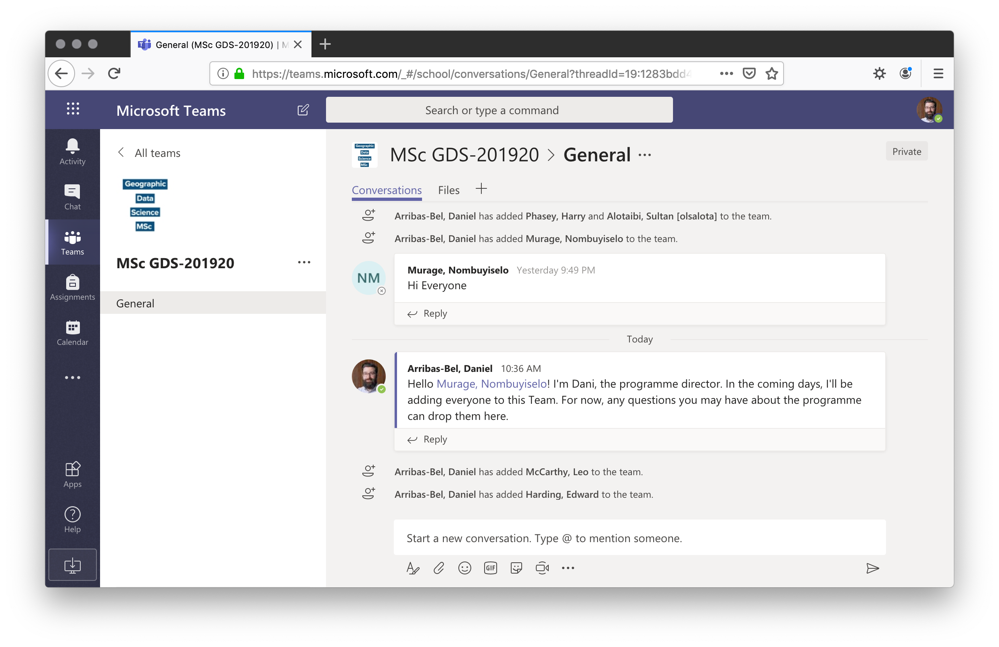

(Self-)Quiz
- Have you ever used data to make decisions in your life?
- Have you ever heard the term “Data Science”?
- Have you ever written a line of computer code?
Philosophy
- (Lots of) methods and techniques
- General overview
- Intuition
- Very little math
- Lots of ways to continue on your own
- Emphasis on the application and use
- Close connection to “real world” applications
Content
-
Blocks A-C: “big picture” content + computational tools (learning curve)
-
Blocks D-H: “meat” of the course (lots of concepts packed)
-
Rest of the course: prepare an awesome Computational Esssay
Logistics - Teams
Team
Code
Driving Vs automobile engineering
Python

Python
- General purpose programming language
- Sweet spot between “proof-of-concept” and “production-ready”
- Industry standard: GIS (Esri, QGIS) and Data Science (Google, Facebook, Amazon, Netflix, The New York Times, NASA…)
Self-directed learning
Prepare
-
This is a flipped class: it’s like a gym, the “subscription” does not make you fit
-
Bring questions, comments, feedback, (informed) rants to Teams/labs
-
Teams, Teams, Teams
-
Collaborate (it’s NOT a zero-sum win!!!)
More help!!!
This course is much more about “learning to learn” and problem solving rather than acquiring specific programming tricks or stats wizardry
-
Learn to ask questions (but don’t expect exact answers all the time!!!)
-
Help others as much as you can (the best way to learn is to teach)
-
Search heavily on Google + Stack Overflow
Workflow - Before a Lab
- Go over the Concepts and Hands-on sections of a block
- Get started on the DIY
- Record questions and post them on Teams prior to the lab
Workflow - Online Labs
- Come work on the DIY sections
- Live answers to questions posted
- Support from demonstrators and module lead
Assignments
- Computer tests: W.5 (20%) and W.10 (25%)
- Computational essay (W.12, 50%)
- Equivalent to 2,500 word
- Report (notebook) with code, figures (e.g. maps), and text
- Discussion board (5%)
NOTE: recommendation letters only for great students (>70)